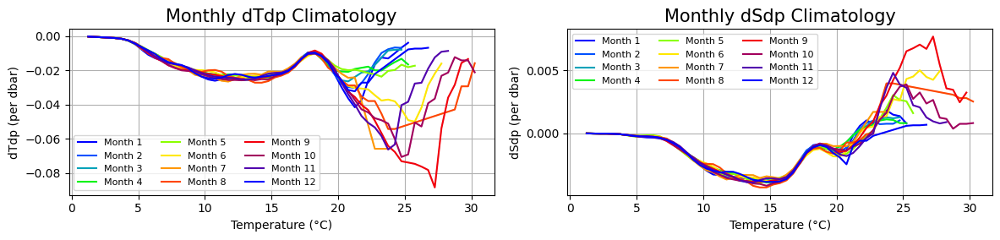

oceanarray demo - preparation
This notebook walks through the instrument-level processing.
[1]:
from pathlib import Path
import numpy as np
import gsw
import xarray as xr
import numpy as np
import matplotlib.pyplot as plt
from oceanarray import readers, plotters, tools, convertOS, writers, mooring
from oceanarray import rapid_interp
Stack instruments on a mooring
[2]:
data_dir = Path("..", "data")
files = list(data_dir.glob("OS_wb2_9_201114_P.nc"))
print(files)
ds_stack = xr.open_dataset(files[0])
#ds_list_OS = readers.load_dataset(files)
#ds_stack = mooring.combine_mooring_OS(ds_list_OS)
#ds_stack
[]
---------------------------------------------------------------------------
IndexError Traceback (most recent call last)
Cell In[2], line 4
2 files = list(data_dir.glob("OS_wb2_9_201114_P.nc"))
3 print(files)
----> 4 ds_stack = xr.open_dataset(files[0])
6 #ds_list_OS = readers.load_dataset(files)
7
8 #ds_stack = mooring.combine_mooring_OS(ds_list_OS)
9 #ds_stack
IndexError: list index out of range
Step 1: Grid in time
In this case, we are filtering with a 2-day 6th order Butterworth filter, then linearly interpolating onto a regular 12-hour grid.
[3]:
ds_filt = mooring.filter_all_time_vars(ds_stack)
ds_12h = mooring.interp_to_12hour_grid(ds_filt)
ds_12h
---------------------------------------------------------------------------
NameError Traceback (most recent call last)
Cell In[3], line 1
----> 1 ds_filt = mooring.filter_all_time_vars(ds_stack)
2 ds_12h = mooring.interp_to_12hour_grid(ds_filt)
3 ds_12h
NameError: name 'ds_stack' is not defined
[4]:
# Plot the temperature time series by depth
plotters.plot_timeseries_by_depth(ds_12h, var="CNDC")
---------------------------------------------------------------------------
NameError Traceback (most recent call last)
Cell In[4], line 2
1 # Plot the temperature time series by depth
----> 2 plotters.plot_timeseries_by_depth(ds_12h, var="CNDC")
NameError: name 'ds_12h' is not defined
plotters.plot_timeseries_by_depth(ds_12h, var=”PRES”)
Step 2: Grid vertically
[5]:
clim_path = Path("../data/climatology_WB2.nc")
ds_clim = xr.open_dataset(clim_path)
# plot the climatology
# Plot the climatology
fig, ax = plt.subplots(1, 2, figsize=(12, 3))
plotters.plot_climatology(ds_clim, clim_ds_smoothed=ds_clim,var="dTdp", fig=fig, ax=ax[0])
plotters.plot_climatology(ds_clim, clim_ds_smoothed=ds_clim, var="dSdp", fig=fig, ax=ax[1])
[5]:
(<Figure size 1200x300 with 2 Axes>,
<Axes: title={'center': 'Monthly dSdp Climatology'}, xlabel='Temperature (°C)', ylabel='dSdp (per dbar)'>)

[6]:
# The climatology is in SA and CT, so we need to convert our data
# Maybe for similarity with RAPID, we shoudl convert the climatology to T and S
ds_clim
[6]:
<xarray.Dataset> Size: 15kB
Dimensions: (month: 12, TEMP: 74)
Coordinates:
* month (month) int64 96B 1 2 3 4 5 6 7 8 9 10 11 12
* TEMP (TEMP) float64 592B -1.75 -1.25 -0.75 -0.25 ... 33.75 34.25 34.75
Data variables:
dTdp (month, TEMP) float64 7kB ...
dSdp (month, TEMP) float64 7kB ...
Attributes:
method: seasonal climatology built from downsampled CTD profiles
temp_bin_width: 0.5
description: Monthly climatology of dT/dP and dS/dP vs temperature.
generated_by: verticalnn rapid_interp module
created_on: 2025-06-09T17:45:03[7]:
pmax = float(ds_12h.PRES.max())
print("Maximum pressure in ds_interp:", pmax)
pmax = max(ds_12h.PRES.max(), 3900)
print("Maximum pressure after adjustment:", pmax)
pgrid = rapid_interp.spacing(0, pmax, 20)
SP = gsw.SP_from_C(ds_12h["CNDC"], ds_12h["TEMP"], ds_12h["PRES"])
SA = gsw.SA_from_SP(SP, ds_12h["PRES"], ds_12h["LONGITUDE"], ds_12h["LATITUDE"])
CT = gsw.CT_from_t(SA, ds_12h["TEMP"], ds_12h["PRES"])
ds_12h = ds_12h.assign(SP=(("TIME", "DEPTH", "LATITUDE", "LONGITUDE"), SP.data),
SA=(("TIME", "DEPTH", "LATITUDE", "LONGITUDE"), SA.data),
CT=(("TIME", "DEPTH", "LATITUDE", "LONGITUDE"), CT.data))
lat = float(ds_12h["LATITUDE"].values)
lon = float(ds_12h["LONGITUDE"].values)
ds_12h = ds_12h.squeeze(dim=["LATITUDE", "LONGITUDE"], drop=True)
ds_12h = ds_12h.assign_coords(LATITUDE=("TIME", [lat] * ds_12h.dims["TIME"]))
ds_12h = ds_12h.assign_coords(LONGITUDE=("TIME", [lon] * ds_12h.dims["TIME"]))
ds_interp = rapid_interp.interpolate_profiles(ds_12h, ds_clim, time_key="TIME", p_grid=pgrid)
ds_12h
---------------------------------------------------------------------------
NameError Traceback (most recent call last)
Cell In[7], line 1
----> 1 pmax = float(ds_12h.PRES.max())
2 print("Maximum pressure in ds_interp:", pmax)
4 pmax = max(ds_12h.PRES.max(), 3900)
NameError: name 'ds_12h' is not defined
[8]:
ds_interp
---------------------------------------------------------------------------
NameError Traceback (most recent call last)
Cell In[8], line 1
----> 1 ds_interp
NameError: name 'ds_interp' is not defined
[9]:
plotters.plot_timeseries_by_depth(ds_12h, var="PRES")
plotters.pcolor_timeseries_by_depth(ds_interp, var="SA")
---------------------------------------------------------------------------
NameError Traceback (most recent call last)
Cell In[9], line 1
----> 1 plotters.plot_timeseries_by_depth(ds_12h, var="PRES")
2 plotters.pcolor_timeseries_by_depth(ds_interp, var="SA")
NameError: name 'ds_12h' is not defined
[10]:
# Check the profiles
plotters.scatter_profile_vs_PRES(ds_interp, ds_12h, var="SA")
---------------------------------------------------------------------------
NameError Traceback (most recent call last)
Cell In[10], line 2
1 # Check the profiles
----> 2 plotters.scatter_profile_vs_PRES(ds_interp, ds_12h, var="SA")
NameError: name 'ds_interp' is not defined